🎵 Радіо УКРАЇНИ 🇺🇦
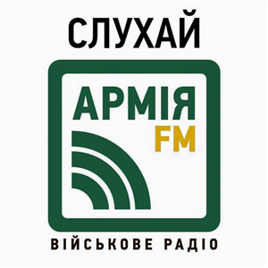
Armiya FM
Hit FM
NRJ Ukraine
Melodia FM
Kraina FM
Buske Radio
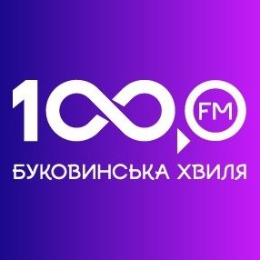
Буковинська хвиля 100.0
Lviv Duzhe Radio
Dnipro Europa Plus
Golos Stryia
Kremenchuk Автохвиля
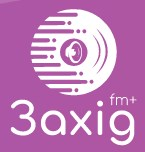
ZFM
Lutsk Аверс FM
Korosten New Day FM
Radekhiv Radio Radekhiv
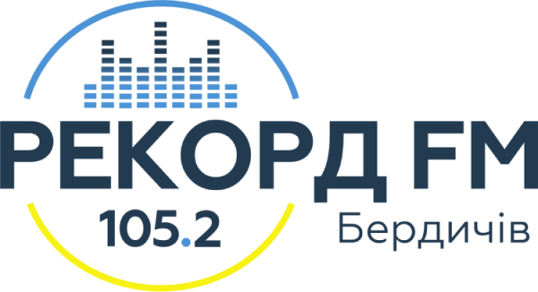
Berdychiv Rekord FM

Radio ROKS
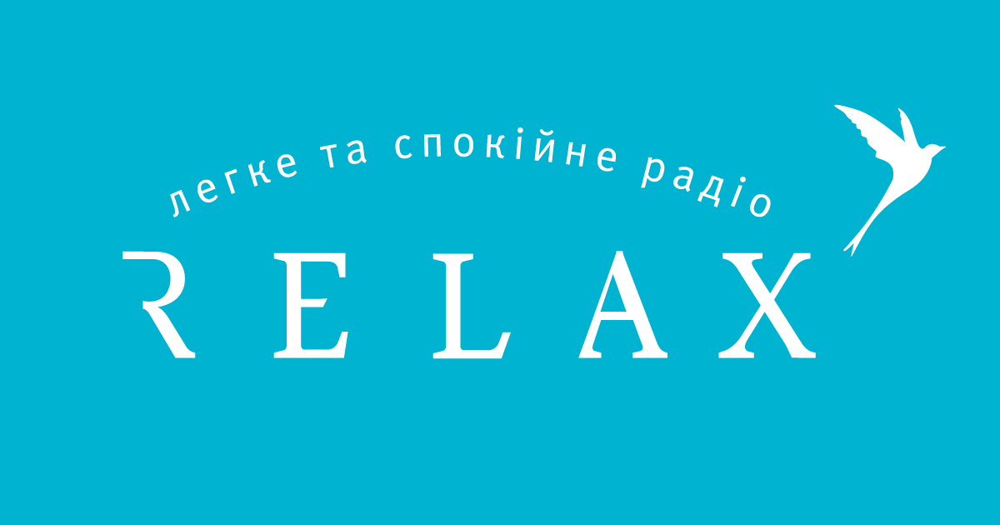
Radio Relax
Radio Jazz
Люкс FM
Радіо Максимум
Радіо Nostalgie
Радіо NV
Радіо Промінь

Радіо Культура

Українське Радіо
Наше Радіо
Lounge FM
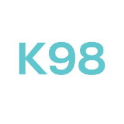
Київ FM 98.0
Радіо Трек
Прямий FM
Radio Gold UA
Закарпаття FM
Megapolis FM
Radio ROKS Ballads

Radio ROKS Український Рок
Radio Relax International
Radio Relax Cafe
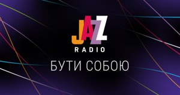
Radio Jazz Gold
Radio Jazz Light

Hit FM Top Hits

Hit FM Найбільші Хіти
Hit FM Українські Хіти
Kiss FM Deep
Melodia FM Romantic
Melodia FM Disco
Radio ROCKS Kyiv FM
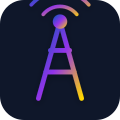
ProgressiveUA
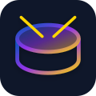
Одесса радио
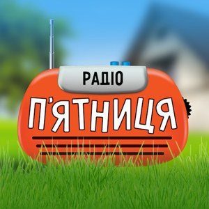
Радіо П'ятниця
Radio ROKS Hard'n'Heavy
Громадське радіо
Radio Jazz Cover
Radio Bayraktar
Радіо С4
REPLAY NEWS - Українська Новинне радіо кожні 5 хвилин
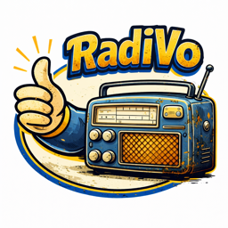
RadiVo
Люкс ФМ – Сучасні хіти
Radio Social.net.ua

Західний полюс West Pole 32k AAC
Радіо Байрактар
Люкс ФМ – Українські хіти
Мелодія Int
Tim FM Chernihiv
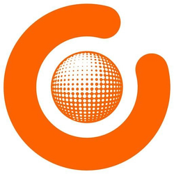
Сфера-ФМ (Рівне)
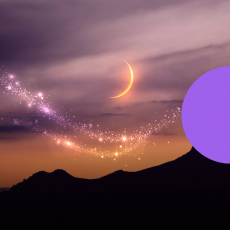
Українське Радіо: Казки
Радіо Хартія (Radio Khartia)
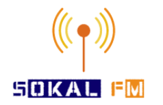
Радіо Сокаль
Радіо Новий День

Радіо Ми Україна
ZFM+ (Захид ФМ +)
Наше Радіо 107,9
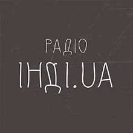
Радіо Інді.UA
Звичайне україномовне радіо
Радіо Перше
Радіо Нікополя
П'ятниця Кременчук
Світ FM
FreshRock Internet Radio Station
RZK
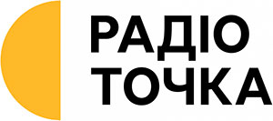
Радіоточка
Радіо РАІ
Радіо Місто над Бугом
K-Pop Radio
Lux FM Lviv
Minatrix.FM: Независимое онлайн-радио и сообщество артистов для публикации музыки.
Misto FM Juda
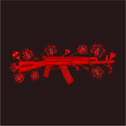
Pihota.FM
Power Кременчуг
Radio «RAID»
radio Italiana(UA)
Radio ROCKS Новий Рок FM
Radio Skovoroda
Radio VTSU

RADIO-HOOLIGAN
Wolf Music Radio
Yantarne FM
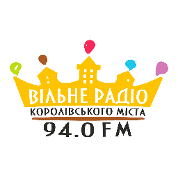
Вільне РАДІО Жовква ФМ
Єден радіо
Жидачів FM
Західний полюс West Pole 64k AAC+
Коростень фм
Люкс ФМ – Золоті хіти
Надвірна FM
Радио НВ
Радіо RESPECT
Радіо X.ON
Радіо КРИВБАС
Радіо Магніт
Радіо Мегаполіс (Кам'янське)
Радіо Накипіло / Radio Nakypilo
Радіо Сяйво
Слобожанське ФМ
Стрий FM
Українські хіти
ЕКО Radio
Трансляція РКБ
HBR1 - Dream Factory [Ogg Vorbis]

Kiss FM Ukraine HD
Radio 24
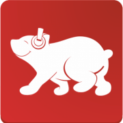
The West Pole Radio
TopRadio
Ukrainian Radio FM
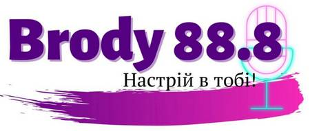
Броди ФМ

Єдині новини
Радіо Ми з України
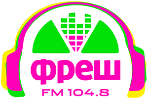
Фреш FM Стрий, 104.8 FM
Явір FM
Українське Радіо. Одеса
Радіо Ритм
Тиса-FM
Lux FM
Радіо Аверс
Перше міське радіо (Одеса)
106.5 Kiss FM
AI-MUSIC
Flash Radio
Gachi Station (Ukrainian playlist) #1
Greatest Songs Radio
I Love Kebab
KEXXX FM Ukraine

KISS FM Digital
Radio Jazz FM
Radio Relax Інструментал 320

Radio ROKS Hard and Heavy 320
Radio ROKS Рок-Балади
Radio Ukraine International FM
Relax Українською
Vinnytsia 88.6 FM
Ванда FM
Всесвітня служба радіо
Голос Прикарпаття, Старий Самбір
Гуляй Радіо
Країна FM
Наше Радіо УкрТоп100
Радіо 10
Радіо BakerTilly
Радіо Medicover
Радіо Егоїсти
Радіо з Криївки
Радіо Трускавець FM Live
Сок FM
Хіт FM
Hit FM Best
Hit FM Ukrainian
Radio Jazz Groove
Радіо Такт (Вінниця)